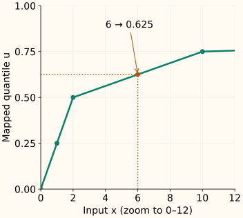

Quantile and Rank Transform
A quantile transform represents a value by its position in a reference distribution. Instead of asking “how many units is this?”, it asks “where does this sit relative to the training values?” This can radically change the distances a model sees.
Unlike a fitted power family, it stores many quantile landmarks rather than one shape parameter. The important questions are how those landmarks are built, how new values are placed between them, and what information is lost at the boundaries.
Start with five sorted training values
Use [0, 1, 2, 10, 100]. With one landmark at each observation, assign evenly spaced positions from 0 to 1: [0, 0.25, 0.5, 0.75, 1]. The large original gaps no longer dominate the training representation.
| Training landmark | Quantile position u |
|---|---|
| 0 | 0.00 |
| 1 | 0.25 |
| 2 | 0.50 |
| 10 | 0.75 |
| 100 | 1.00 |
For $n$ distinct sorted observations, let $r$ be the rank, starting at 1. This particular endpoint convention assigns position $u_r$ by
For the fourth value, 10, this gives $(4-1)/(5-1)=0.75$. Other rank conventions exist; name the one you use. Scikit-learn reproduces these landmarks here with n_quantiles=5 and no subsampling.
How does an unseen value get a position?
The value 6 is halfway between the stored landmarks 2 and 10. Place it halfway between their positions, 0.5 and 0.75:

This is interpolation against a fitted reference, not re-ranking the incoming batch. The same input receives the same transformed value whether it arrives alone or alongside a much larger observation.
How does this relate to the empirical CDF?
A cumulative distribution function, or CDF, gives the probability of a value at or below a threshold $x$. Its empirical estimate counts training observations instead. With $n$ training values $x_i$, and an indicator $\mathbf1[\cdot]$ that is 1 when its condition is true, it is
In our data, three of five values are at or below 6, so the literal empirical CDF is 0.6. The interpolated quantile map above gives 0.625. They express the same distribution-position idea with different finite-sample conventions. An empirical CDF is a step function; the stored-quantile map interpolates between landmarks.
A second map can produce normal scores
Uniform output stops at the position $u$. For normal output, ask which standard-normal value has that cumulative probability. Let $\Phi$ be the CDF of a normal distribution with mean 0 and standard deviation 1, and $\Phi^{-1}$ its quantile function. The normal score is
Positions 0.25, 0.5 and 0.75 become approximately −0.6745, 0 and +0.6745. Our future value 6 has $u=0.625$, so its normal score is about 0.3186. This extra map changes the spacing again: normal scores spread the tail positions farther apart.
The theoretical scores at exactly 0 and 1 are infinite. Scikit-learn clips those extremes to finite values; in the example below they are about ±5.1993. A finite dataset with ties does not become an exact continuous normal distribution, and transforming columns separately does not make them independent or jointly Gaussian.
Fit once, transform, then check the inverse
The small example uses all five observations and five landmarks. subsample=None disables the optional sampling used to estimate quantiles on larger datasets. The inverse shows where boundary clipping loses information.
Run uniform and normal mappings
import numpy as np
from sklearn.preprocessing import QuantileTransformer
train = np.array([[0.], [1.], [2.], [10.], [100.]])
future = np.array([[-10.], [0.], [6.], [100.], [200.]])
for output in ["uniform", "normal"]:
transform = QuantileTransformer(
n_quantiles=5, output_distribution=output, subsample=None
).fit(train)
z = transform.transform(future)
print(output, z.ravel().round(4).tolist())
print("inverse", transform.inverse_transform(z).ravel().round(4).tolist())
uniform [0.0, 0.0, 0.625, 1.0, 1.0]
inverse [0.0, 0.0, 6.0, 100.0, 100.0]
normal [-5.1993, -5.1993, 0.3186, 5.1993, 5.1993]
inverse [0.0, 0.0, 6.0, 100.0, 100.0]The fitted quantiles_ store input landmarks; references_ store their probability positions. With fewer landmarks, the interpolated map is coarser. If you enable random subsampling, record its seed along with the fitted transformer.
Ties and extremes are the main information limits
Equal inputs stay equal. For [0, 0, 1, 2, 10] with five landmarks, scikit-learn’s uniform outputs are [0, 0, 0.5, 0.75, 1]. Both zeros remain at the lower boundary. You cannot spread those identical values over separate ranks without introducing an additional tie-breaking rule.
Out-of-range values merge. In the first example, both 200 and 2,000 map to 1. This can limit the influence of large marginal outliers, but it also removes their relative severity. A model that needs to distinguish extreme magnitudes may lose useful information.
Within the distinct landmarks of our example, order and invertibility survive. In general, ties and clipping mean the map is nondecreasing rather than strictly increasing everywhere. Original distances, ratios and linear correlations need not survive.
Use distribution position when it serves the model
A quantile representation can be useful when position within a feature’s distribution matters more than its units. It is a larger change than standardization, which rescales all gaps in a column by the same factor. Compare the two with the same validation split and model-selection procedure.
Fit quantiles only on the training part of each fold, using a pipeline. A future population may have a different distribution; applying the old map does not force its outputs to stay uniform or normal. Re-fitting silently would also change what the model’s input coordinates mean.
C++: a small uniform map with an explicit tie policy
This class stores one landmark per observation, assigns the endpoint ranks above, and interpolates with boundary clipping. To keep its contract clear, it accepts only distinct finite training values and rejects ties. It is not a full reimplementation of scikit-learn’s quantile estimation or duplicate-landmark handling.
Compile the fitted interpolation map
#include <algorithm>
#include <cmath>
#include <iomanip>
#include <iostream>
#include <stdexcept>
#include <vector>
class UniformRanks {
std::vector<double> knots_;
public:
explicit UniformRanks(std::vector<double> values) : knots_(values) {
if (knots_.size() < 2)
throw std::invalid_argument("at least two observations required");
for (double x : knots_)
if (!std::isfinite(x)) throw std::invalid_argument("finite data required");
std::sort(knots_.begin(), knots_.end());
if (std::adjacent_find(knots_.begin(), knots_.end()) != knots_.end())
throw std::invalid_argument("this example requires distinct landmarks");
for (std::size_t i = 1; i < knots_.size(); ++i)
if (!std::isfinite(knots_[i] - knots_[i - 1]))
throw std::overflow_error("landmark interval is too large");
}
double transform(double x) const {
if (!std::isfinite(x)) throw std::invalid_argument("finite input required");
if (x <= knots_.front()) return 0;
if (x >= knots_.back()) return 1;
const auto it = std::upper_bound(knots_.begin(), knots_.end(), x);
const std::size_t hi = static_cast<std::size_t>(it - knots_.begin());
const double fraction = (x - knots_[hi - 1]) / (knots_[hi] - knots_[hi - 1]);
return (static_cast<double>(hi - 1) + fraction) / (knots_.size() - 1);
}
};
int main() {
const UniformRanks reference({0., 1., 2., 10., 100.});
std::cout << std::fixed << std::setprecision(4);
for (double x : {-10., 0., 6., 100., 200.})
std::cout << x << " -> " << reference.transform(x) << "\n";
}
-10.0000 -> 0.0000
0.0000 -> 0.0000
6.0000 -> 0.6250
100.0000 -> 1.0000
200.0000 -> 1.0000References and further reading
- Scikit-learn: QuantileTransformer — landmarks, output distributions, subsampling, bounds and stored attributes.
- Scikit-learn: nonlinear transformations — the CDF-to-quantile construction and its effects on feature relationships.
- SciPy: empirical CDF — the step-function estimate based on observed cumulative frequencies.